前端简介 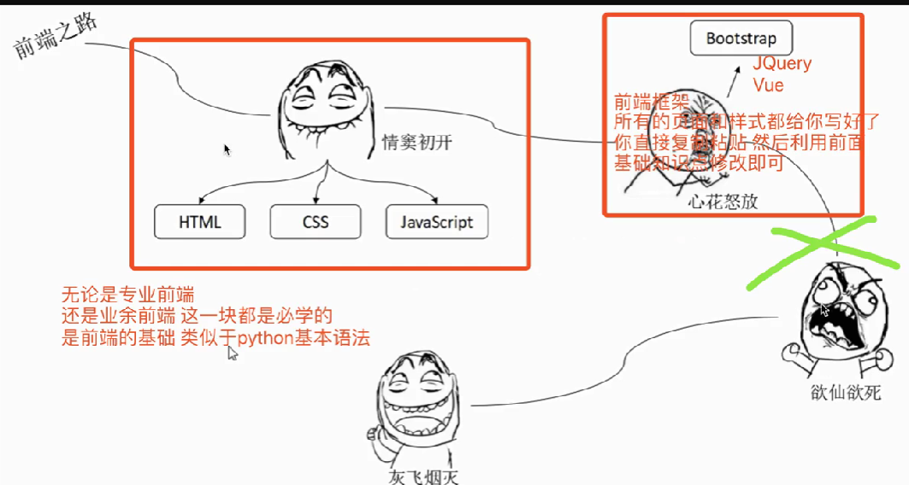
bootstrap / JQuery / Vue: 前端框架
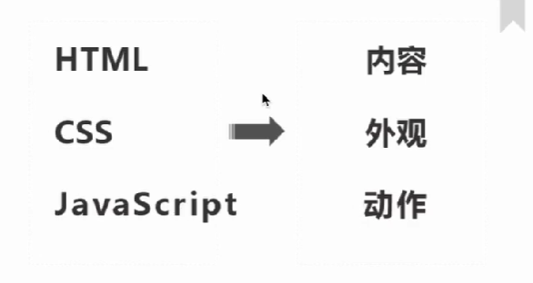
HTML：网页的骨架 没有任何的样式
CSS：给骨架添加各种样式 美化 HTML
JS：控制网页的动态效果
前端框架：Bootstrap / JQuery / Vue 提前给你封装好了很多操作 只要按照固定的语法调用即可
web服务本质及HTTP协议前戏 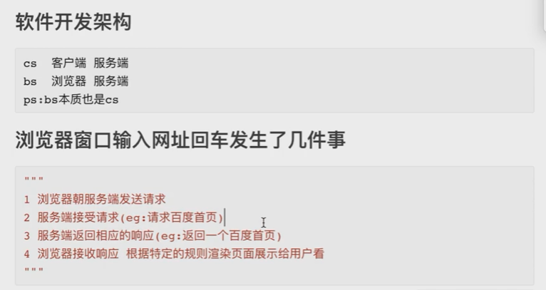
01服务端.py
1 2 3 4 5 6 7 8 9 10 11 12 13 14 15 import socketserver = socket.socket() server.bind(('127.0.0.1' , 8080 )) server.listen(5 ) while True : conn, addr = server.accept() data = conn.recv(1024 ) print (data) conn.send(b'hello baby~' ) conn.close()
提问：还需要写客户端吗？不需要自己写。
因为：bs架构本身也是cs架构，b是浏览器，即浏览器可以充当当前服务器的客户端。现在让浏览器来访问服务端就可以了
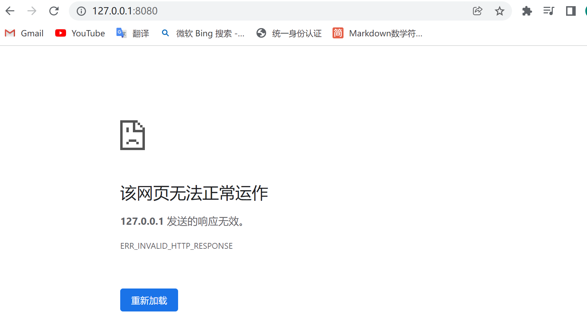
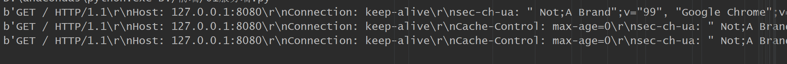
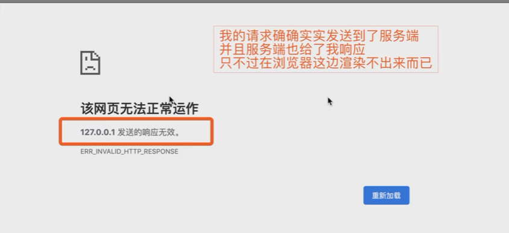
浏览器可以充当很多服务端的客户端（百度 腾讯视频 优酷视频….）
如何做到浏览器能够和多个不同的客户端之间进行数据交互？
制定一个统一的标准。如果想要让你写的服务端能够和客户端之间做正常的数据交互， 那么你就必须要遵循一些规则
HTTP协议 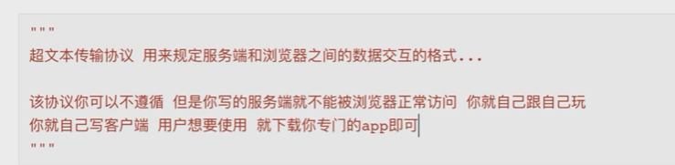
HTTP协议
1 2 3 4 5 6 7 8 9 10 11 12 13 14 15 16 17 18 19 20 21 22 23 24 25 26 27 28 29 30 31 32 33 34 35 36 37 38 39 40 41 42 43 44 45 46 47 48 49 50 51 52 53 54 55 56 57 58 59 60 """ HTTP协议的由来(sql语句由来) 浏览器只有一个如何兼容N多个服务端 """ 1 基于请求响应 2 基于TCP/IP作用于应用层之上的协议 3 无状态 不保存用户信息 无论来多少次 都待你如初见 如何做到保存用户状态？？？ cookie、session、token 4 无/短链接 请求来我响应你 请求来一次我响应一次 之后就没有联系了 长链接:双方建立连接之后默认不断开 websocket(群聊功能、服务端主动给客户端发送消息) 请求首行(HTTP协议的版本，当前请求方式) 请求头(一大堆k，v键值对) 请求体(并不是所有的请求方式都有请求体,get没有post有 存放的是post请求提交的敏感数据) 响应首行(HTTP协议的版本，响应状态码) 响应头(一大堆k，v键值对) 响应体(浏览器展示给用户看的内容) 统一资源定位符（大白话 网址） 类似于坐标 1. get请求 朝服务端要数据 eg:输入网址获取对应的内容 朝别人要数据(也是可以携带参数的，只不过参数不是放在请求体里面的,而是直接放在url的后面) url?username=jason&password=123 2. post请求 朝服务端提交数据 eg:用户登陆 输入用户名和密码之后 提交到服务端后端做身份校验 朝别人提交数据 """用简短的数字来表示复杂的状态或一大串提示性/描述性信息""" 1XX:服务端已经成功接收到了你的数据 正在处理 你可以继续提交额外的数据 2XX:请求成功(200 OK) 3XX:重定向(你想访问A页面但是给你调到了B页面 当你在访问一个需要登陆之后才能看的页面 你会发现自动跳转到登陆页面) 4XX:请求错误(404 请求资源不存在、403 请求不符合条件) 5XX:服务端内部错误(500 ) ps:上述的状态码是HTTP协议规定的，其实到了公司之后每个公司还会自己定制自己的状态及提示信息 公司A 1000 : 1001 : 1002 : 公司B 2001 : 2002 : 2003 : ...
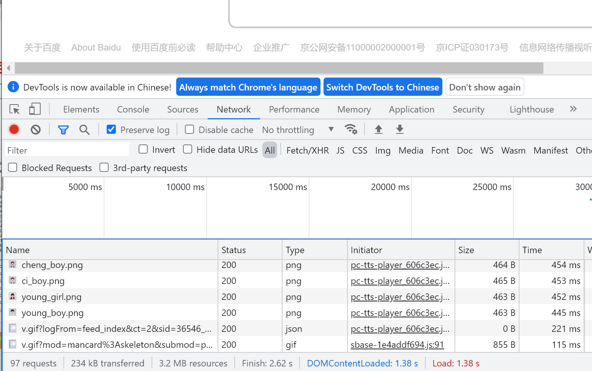
鼠标右键“检查” network：网络状态 再敲百度
Request Method：GET 朝百度服务端要百度首页的数据
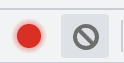
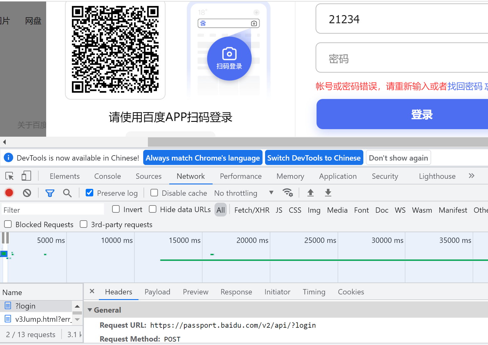
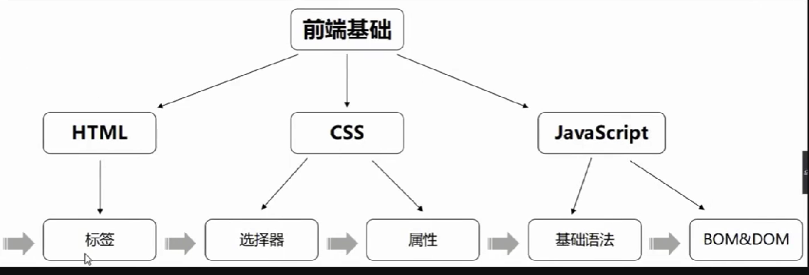
HTML前戏 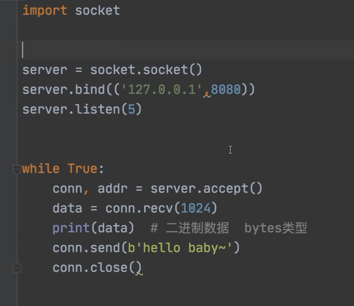
现在想要让服务器发送的内容能被浏览器识别，就要让返回的数据符合HTTP的响应数据格式
1 2 3 <h1 > hello big baby~</h1 > <a href ="https://www.baidu.com/" > click me! give you some color to see see! </a > <img src ="https://tse2-mm.cn.bing.net/th/id/OIP-C.q2ENmoLtW_1eNjSDl43VxQHaLG?w=186&h=279&c=7&r=0&o=5&dpr=2&pid=1.7" />
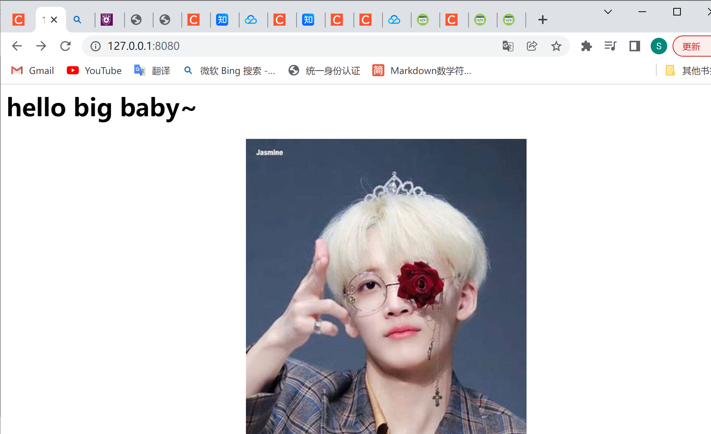
HTML简介
超文本标记语言
如果你想要让浏览器能够渲染出你写的页面，你就必须遵循HTML语法
我们浏览器看到的页面，内部其实都是HTML代码
1 2 3 4 5 6 7 8 9 10 11 12 13 14 15 16 17 18 19 20 21 22 23 """ 超文本标记语言(你在学习它的时候只需要记忆每个标签表示什么意思即可) 书写网页的一套标准 除了HTML可以书写前端页面之外 还有XML也可以书写前端页面 odoo框架内部的前端页面全部是用XML书写 公司内部管理软件 ERP """ # 注释 由于HTML代码非常的杂乱无章并且很多，所以我们习惯性的用注释来划定区域方便后续的查找 导航条所有的html代码 左侧菜单栏的HTML代码
HTML文档结构 1 2 3 4 5 # 文档结构 <html > <head > </head > ：都不是给用户看的 主要是给浏览器看的一些配置信息 <body > </body > ：body书写的所有的内容 都是给用户看的。写什么浏览器就渲染什么，用户就能看到什么 </html >
注意：HTML代码是没有格式的，可以全部写在一行都没有关系，只不过我们习惯了缩进来表示代码
两种打开HTML文件的方式
找到文件所在的位置右键选择浏览器打开
在pycharm内部，集成了自动调用浏览器的功能，直接点击即可（前提是你的电脑上安装了对应的浏览器）。推荐直接全部使用谷歌浏览器
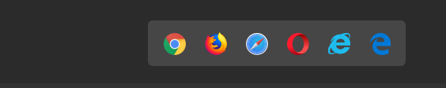
标签的分类 1 2 3 4 5 6 <h1 > </h1 > <a href ="https://www.baidu.com/" > </a > <img /> 1 双标签 2 单标签（自闭和标签）
head内常用标签 在书写HTML代码的时候，你只需要写标签名，然后tab就能自动补全
多行注释 ctrl+？
head内常用标签
1 2 3 4 5 6 7 8 9 10 11 12 13 14 15 16 17 18 19 20 21 22 23 24 25 26 27 28 29 30 31 32 33 34 title 定义网页标题信息 <title > 亚洲最大的线上赌场</title > style 内部支持直接书写css代码 <style > h1 { color : greenyellow; } </style > link 引入外部css文件 <link rel ="stylesheet" href ="mycss.css" > script 内部可以书写js代码并且也可以引入外部js文件 <script > alert(123) </script > <script src ="myjs.js" > </script > meta 定义网页源信息 <meta charset ="UTF-8" > 编码<meta http-equiv ="refresh" content ="2;URL=https://www.oldboyedu.com" > keywords后面指定的关键字那么该网页都有可能被百度搜索出来展示给用户 <meta name ="keywords" content ="老男孩教育,Python培训,Linux培训,网络安全培训,linux云计算培训,Python基础教程,Linux运维培训,Python学习班,linux培训机构,Python培训学校,SRE工程师培训,Python入门" > 当你在用浏览器搜索时，只要输入了description 网页的描述性信息 <meta name ="description" content ="老男孩教育以“高品质IT培训机构，只培养技术精英”为宗旨，专注于Linux运维、Python、网络安全、Go语言、Linux云计算、SRE工程师培训，汇聚一批实战大牛，理论+实战互动式教学，注重教学质量，并获得学员良好口碑。" >
body内基本标签 你肉眼能够在浏览器上面看到的花里胡哨的页面。内部都是HTML代码
基本标签 1 2 3 4 5 6 7 8 9 10 11 12 13 14 15 16 <h1 > 我是h1</h1 > 标题标签 1~6级标题<b > 加粗</b > <i > 斜体</i > <u > 下划线</u > <s > 删除线</s > <p > 段落</p > <br > 换行<hr > 水平分割线""" h1～h6 标题标签 1~6级标题 p 段落标签 u 下划线 i斜体 b加粗 s删除线 <hr > 水平分割线<br > 换行"""
标签的分类2 1 2 3 4 5 6 7 8 9 10 11 12 13 h1-h6 p div 1. 块级标签可以修改长宽 行内标签不可以 修改了也不会变化 2. 块级标签内部可以嵌套任意的块级标签和行内标签 3. 但是p标签虽然是块级标签，但是他只能嵌套行内标签，不能嵌套块级标签 如果你套了，问题也不大，因为浏览器会自动帮你解开（浏览器是直接面向用户的，不会轻易报错，哪怕有报错，用户也不会感受到） 前端基本不会报错 总结：只要是块级标签都可以嵌套行内标签，p标签只能嵌套行内标签（HTML书写规范） i u s b span 行内标签不能嵌套块级标签，但可以嵌套行内标签
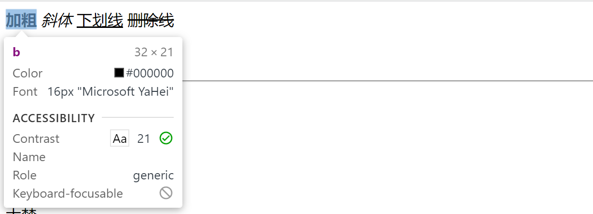
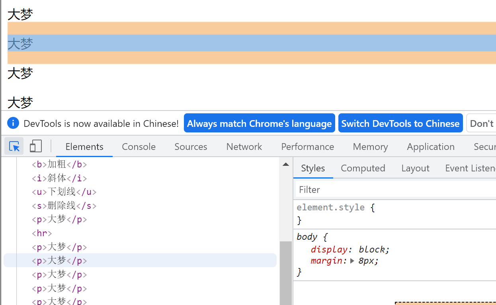
特殊符号 1 2 3 4 5 6 7 8 9 10 11 12 13 14 15 16 空格 <p>kkkkk kkk</p> 大于 > 1 > 2 小于 < &符号 & 商标(圆圈R) ® 版权(圆圈C) © 羊角符 ¥
常用标签 div、span标签 1 2 3 4 5 6 7 8 div：网页初期划定区域范围 块级标签 span：划定文本的 行内标签 上述的两个标签是在构造页面初期最常使用的 页面的布局一般先用div和span占位之后再去调整样式 尤其是div使用非常的频繁 div可以把它看成是一块区域，也就意味着用div来提前规定所有的区域 之后往该区域内部填写内容即可 而普通的文本先用span标签
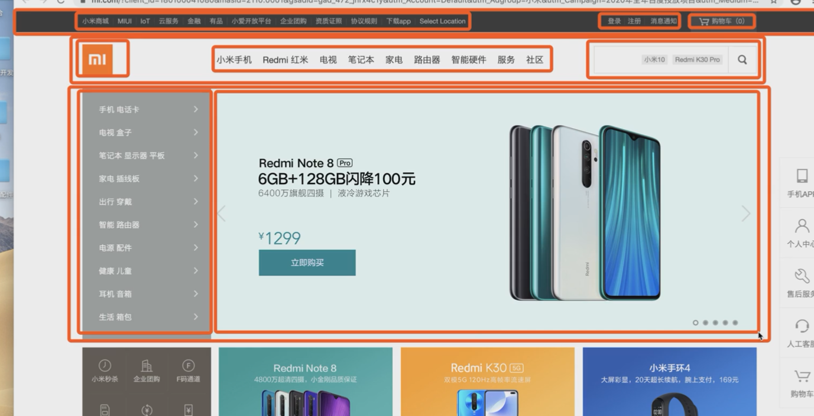
img标签 1 2 3 4 5 6 7 8 9 10 11 12 13 14 15 16 17 18 19 20 21 22 23 24 25 26 27 28 29 30 31 32 33 34 35 36 37 38 39 40 41 42 43 44 45 46 47 48 49 50 51 52 <a href='' target='' ></a> """ 当a标签指定的网址从来没有被点击过，那么a标签的字体颜色是蓝色 如果点击过了就会是紫色 """ href 1. 可以放一个url点击自动跳转 2. 还可以放其他标签(不一定是a标签，h标签等也行)的id 值 锚点功能 点击即可跳转到对应的标签位置 target 默认a标签是在当前页面完成跳转 _self 也可以修改为新建页面跳转 _blank <a href="http..." target="_self" >点我去搜狗</a> <a href="http..." target="_blank" >点我去搜狗</a> 控制是否在当前页跳转 _self _blank """eg:点击一个文本标题，页面自动跳转到标题对应的内容区域""" <a href="" id ="d1" >顶部</a> <h1 id ="d111" >hello world</h1> <div style="height: 1000px;background-color: red" ></div> <a href="" id ="d2" >中间</a> <div style="height: 1000px;background-color: greenyellow" ></div> <a href="#d1" >回到顶部</a> <a href="#d2" >回到中间</a> <a href="#d111" >回到hello world</a> 图片标签 <img src='' alt='' title='' height='' width='' /> src 1. 可以放图片的路径 本地或者网上 2. 还可以放一个url 会自动朝该url提交get请求获取图片数据展示(暂时不考虑) alt="" 图片加载不出来的时候 展示的提示信息 title 鼠标悬浮在图片上之后展示的提醒信息 height、width (800px,px是像素) 单独调整某一个 另外一个会自动等比例缩放 如果两个都调整了 可能会出现图片的失真
标签具有的两个重要属性 1 2 3 4 5 6 7 1. id 值 类似于标签的身份证号，唯一标示，在同一个页面不能有重复 2. class 值 类似于面向对象里面类的继承 一个标签可以继承多个class 值
1 2 <p id ="d1" class ="c1" username ="jason" password ="123" > </p > # username password是自定义的
列表标签
1 2 3 4 5 6 7 8 9 10 11 12 13 14 ul套li <ul > <li > 第一项</li > <li > 第二项</li > <li > 第三项</li > <li > 第四项</li > </ul > 虽然ul标签很丑，但是在页面布局的时候，只要是排版一致的几行数据基本上用的都是ul标签 <ul type ="circle" > </ul > 空心圆点<ul type ="none" > </ul > 没有样式<ul type ="square" > </ul > 方块
1 2 3 4 5 6 7 8 9 10 11 12 13 14 15 16 ol套li ol>li*3 再按tab键（emmet插件） <ol > <li > 111</li > <li > 222</li > <li > 333</li > </ol > <ol type ="1" start ="5" > <li > 111</li > <li > 222</li > <li > 333</li > </ol > 参考博客
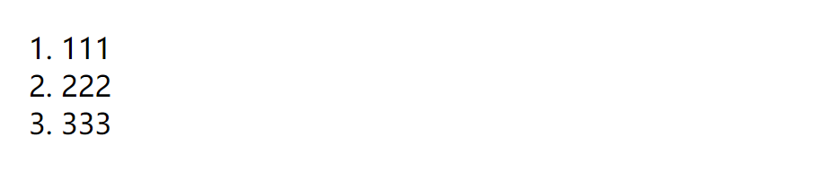
有序：自动标了编号，默认是数字
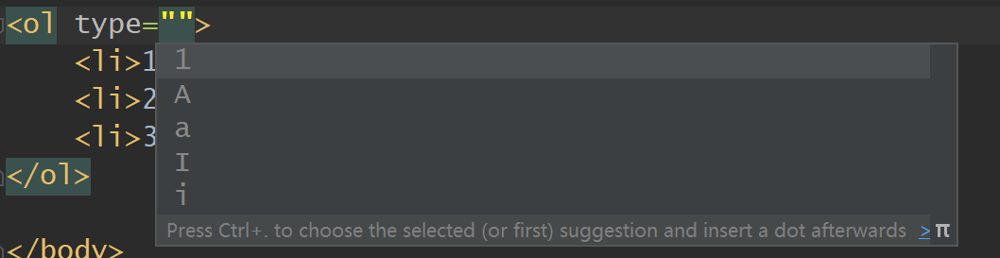
1 2 3 4 5 6 7 8 <dl > <dt > 标题1</dt > <dd > 内容1</dd > <dt > 标题2</dt > <dd > 内容2</dd > <dt > 标题3</dt > <dd > 内容3</dd > </dl >
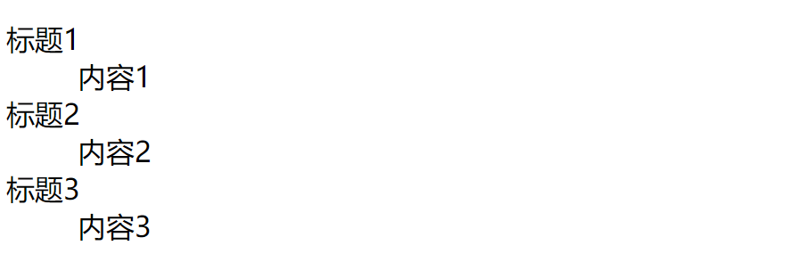
表格标签(只要是展示数据 一般都可以使用表格标签)
表单标签(重要:获取前端用户数据发送给后端)
偷窥一下后端框架的基本使用(flask)
css层贴样式表(选择器)
表格标签 1 2 3 4 5 6 7 8 9 10 11 12 13 14 15 16 17 18 19 20 21 22 23 24 25 26 27 28 29 30 31 32 33 34 35 36 37 38 jason 123 read egon 123 dbj tank 123 hecha ... <table > <thead > </thead > 表头（字段信息） <tbody > </tbody > 表单（数据信息） </table > border加外边框 cellingpadding是文字距内边框的距离 cellingspacing内边框距离外边框的距离 <table border ="1" cellingpadding ="5" cellingspacing ="5" > <thead > <tr > 一个tr就表示一行 <th > username</th > 加粗文本(习惯将表头信息加粗) <td > username</td > 正常文本 </tr > </thead > 表头(字段信息) <tbody > <tr > <td > jason</td > <td > 123</td > <td > read</td > </tr > <tr > ...(新的一行) </tr > </tbody > 表单(数据信息) </table > <table border ="1" > 加外边宽<td colspan ="2" > egon</td > 水平方向占多行<td rowspan ="2" > DBJ</td > 竖直方向占多行 类似于合并单元格# 原生的表格标签很丑 但是后续我们一般都是使用框架封装好的 很好看
表单标签 1 2 3 4 5 6 7 8 9 10 11 12 13 14 15 16 17 18 19 20 21 22 23 24 25 26 27 28 29 30 31 32 """ 能够获取前端用户数据(用户输入的、用户选择、用户上传...)基于网络发送给后端服务器 """ <form action="" ></form> 在该form标签内部书写的获取用户的数据都会被form标签提交到后端(一定要在表单内部写) action:控制数据提交的后端路径(给哪个服务端提交数据) 1. 什么都不写 默认就是朝当前页面所在的url提交数据 2. 写全路径:https://www.baidu.com 朝百度服务端提交 3. 只写路径后缀action='/index/' 自动识别出当前服务端的ip和port拼接到前面 host:port/index/ input 一般配合label使用，好处：点前面的文字(比如下面的username)也能到框里面去第一种 直接将input 框写在label内 <label for ="d1" > username:<input type ="text" id ="d1" > </label> 第二种 通过id 链接即可 无需嵌套，用id 关联起来即可 <label for ="d2" >password:</label> <input type ="text" id ="d2" > (input 是一个框) ps:input 不跟label关联也没有问题 """ label 和 input都是行内标签 """
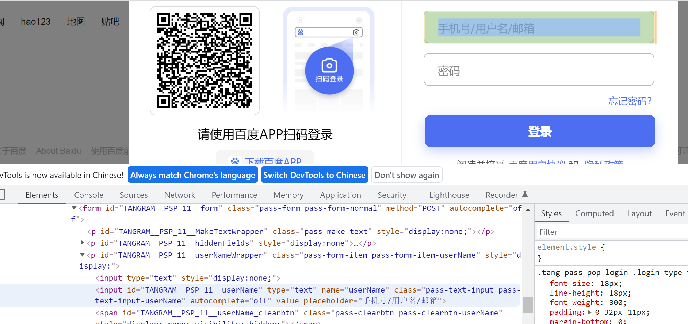
input标签 就类似于前端的变形金刚 通过type属性变形
text：普通文本
password：密文 <input type="password">
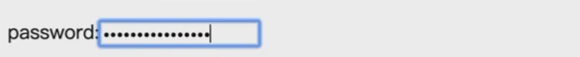
date：日期 <input type="date">
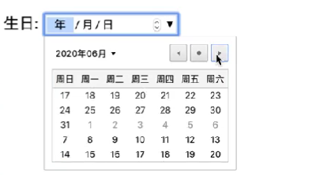
submit：<input type="submit">
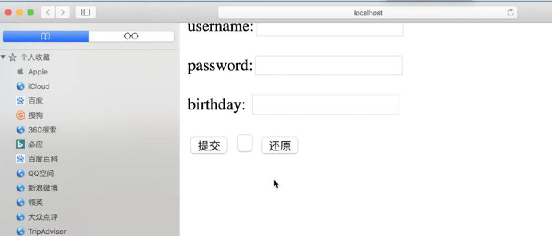
可以用value值来指定内容 <input type="submit" value="注册">
button： <input type="button" value="按钮">
就是一个普普通通的按钮 本身没有任何的功能 但是它是最有用的，学完js之后可以给它自定义各种功能
reset： <input type="submit" value="重置">
重置内容
radio：单选
默认选中要加checked=’checked’
1 2 3 4 5 <input type ="radio" name ="gender" checked ='checked' > 男当标签的属性名和属性值一样的时候可以简写 <input type ="radio" name ="gender" checked > 女checkbox:多选 <input type ="checkbox" checked > DBJ
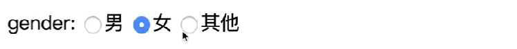
1 2 3 4 5 6 7 8 9 10 11 12 13 14 15 16 17 18 19 20 21 22 23 24 25 26 27 28 29 30 31 32 33 34 35 36 37 38 39 40 41 42 43 44 45 46 47 48 49 50 51 52 53 54 55 56 57 58 59 60 61 62 63 64 pip3 install FLASK form表单默认提交数据的方式 是get请求 数据是直接放在url后面的 http://127.0 .0 .1 :5000 /index/?username=sdadasdsda&gender=on 你可以通过method指定提交方式 <form action="http://127.0.0.1:5000/index/" method="post" > 针对用户选择的标签 用户不需要输入内容 但是你需要提前给这些标签添加内容value值 <p>gender: <input type ="radio" name="gender" value="male" >男 <input type ="radio" name="gender" checked value="female" >女 <input type ="radio" name="gender" value="others" >其他 </p> <p>hobby: <input type ="checkbox" name="hobby" value="basketball" >篮球 <input type ="checkbox" checked name="hobby" value="football" >足球 <input type ="checkbox" checked name="hobby" value="doublecolorball" >双色球 </p> <p>province： <select name="province" id ="" > <option value="sh" >上海</option> <option value="bj" selected>北京</option> <option value="sz" >深圳</option> </select> </p> """ form表单提交文件需要注意 1.method必须是post 2.enctype="multipart/form-data" enctype类似于数据提交的编码格式 默认是urlencoded 只能够提交普通的文本数据 formdata 就可以支持提交文件数据 """ <form action="http://127.0.0.1:5000/index/" method="post" enctype="multipart/form-data" > """下面的代码无需掌握 你只需要关心form表单即可""" from flask import Flask, requestapp = Flask(__name__) @app.route('/index/' ,methods=['GET' ,'POST' ] def index (): print (request.form) print (request.files) file_obj = request.files.get('myfile.png' ) file_obj.save(file_obj.name) return 'OK' app.run() <label for ="d1" >username:<input type ="text" id ="d1" name="username" value="默认值" ></label> disable 禁用 readonly只读
CSS 层贴样式表:就是给HTML标签添加样式的，让它变的更加的好看
1 2 3 4 5 6 7 8 9 10 11 12 13 14 15 16 17 18 19 20 21 22 23 24 25 26 27 28 29 30 31 32 33 34 35 36 37 /*单行注释*/ /* 多行注释1 多行注释2 多行注释3 */ 通常我们在写css样式的时候也会用注释来划定样式区域(因为HTML代码多所以对呀的css代码也会很多) /*这是博客园首页的css样式文件*/ /*顶部导航条样式*/ ... /*左侧菜单栏样式*/ ... /*右侧菜单栏样式*/ ... 选择器 { 属性1 :值1 ; 属性2 :值2 ; 属性3 :值3 ; 属性4 :值4 ; } 1. style标签内部直接书写(为了教学演示方便我们用第一种) <style> h1 { color: burlywood; } </style> 2. link标签引入外部css文件(最正规的方式 解耦合) <link rel="stylesheet" href="mycss.css" > 3. 行内式(一般不用) <h1 style="color: green" >老板好 要上课吗?</h1>
1 2 3 4 5 6 7 8 9 """ css的学习流程 1.先学如何查找标签 css查找标签的方式你一定要学会 因为后面所有的框架封装的查找语句都是基于css来的 css选择器很简单很好学不要有压力!!! 2.之后再学如何添加样式 """
CSS选择器 基本选择器 1 2 3 4 5 6 7 8 9 10 11 12 13 14 15 16 17 18 19 20 21 22 23 24 25 <style> /*id 选择器*/ /* /* color: greenyellow;*/ /*}*/ /*类选择器*/ /*.c1 { !*找到class 值里面包含c1的标签*!*/ /* color: red;*/ /*}*/ /*元素(标签)选择器*/ /*span { !*找到所有的span标签*!*/ /* color: red;*/ /*}*/ /*通用选择器*/ /** { !*将html页面上所有的标签全部找到*!*/ /* color: green;*/ /*}*/ </style>
组合选择器 1 2 3 4 5 6 7 8 9 10 11 12 13 14 15 16 17 18 19 20 21 22 23 24 25 26 27 28 29 30 31 32 33 34 35 36 37 38 39 40 41 """ 在前端 我们将标签的嵌套用亲戚关系来表述层级 <div>div <p>div p</p> <p>div p <span>div p span</span> </p> <span>span</span> <span>span</span> </div> div里面的p span都是div的后代 p是div的儿子 p里面的span是p的儿子 是div的孙子 div是p的父亲 ... """ /*后代选择器*/ /*div span {*/ /* color: red;*/ /*}*/ /*儿子选择器*/ /*div>span {*/ /* color: red;*/ /*}*/ /*毗邻选择器*/ /*div+span { !*同级别紧挨着的下面的第一个*!*/ /* color: aqua;*/ /*}*/ /*弟弟选择器*/ div~span { /*同级别下面所有的span*/ color: red; }
属性选择器 1 2 3 4 5 6 7 8 9 10 11 12 13 14 15 16 17 18 """ 1 含有某个属性 2 含有某个属性并且有某个值 3 含有某个属性并且有某个值的某个标签 """ /*[username] { !*将所有含有属性名是username的标签背景色改为红色*!*/ /* background-color: red;*/ /*}*/ /*[username='jason' ] { !*找到所有属性名是username并且属性值是jason的标签*!*/ /* background-color: orange;*/ /*}*/ /*input [username='jason' ] { !*找到所有属性名是username并且属性值是jason的input 标签*!*/ /* background-color: wheat;*/ /*}*/
总结 1 2 3 4 5 """ 1.form表单所有相关的标签都需要掌握 2.后端框架稍微了解一下 激发兴趣 3.选择器练习一下 """